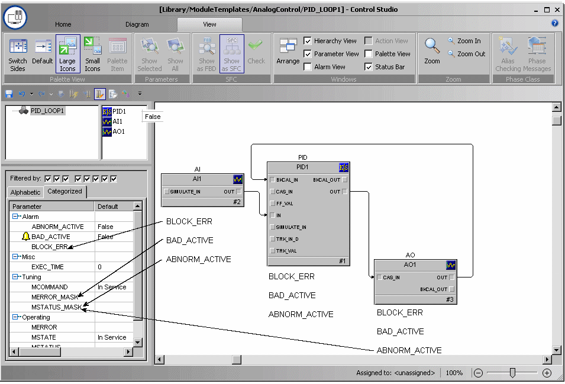

Module status
Each module summarizes its status in the module-level parameters MERROR, MSTATUS, BLOCK_ERR, BAD_ACTIVE, and ABNORM_ACTIVE.

The module parameter MERROR summarizes module error conditions. It stores the current run-time value of the error conditions shown in MERROR_MASK for monitoring and display. MERROR is used in the standard DeltaV module detail displays.
The module parameter MSTATUS summarizes module status conditions. It stores the current run-time value of the error conditions shown in MSTATUS_MASK for monitoring and display. MSTATUS is used in the standard DeltaV module detail displays.
The module parameter BLOCK_ERR summarizes the error status of all of the function blocks' BLOCK_ERR parameters within that module. If an error condition is set in any of the function blocks, that same error condition is propagated up and set in the module parameter BLOCK_ERR. BLOCK_ERR is used in the standard DeltaV module detail displays.
The propagation of function block statuses only works within a single module. A function block's BLOCK_ERR, BAD_ACTIVE, or ABNORM_ACTIVE status does not automatically propagate to a different module (that is, one that does not contain the function block that has the condition).
Several error conditions can be active at the same time in a module. MERROR and MSTATUS set either the module parameter BAD_ACTIVE or the module parameter ABNORM_ACTIVE to true, depending on the configuration of the module parameters MERROR_MASK and MSTATUS_MASK.
If any condition selected in either MERROR_MASK or MSTATUS_MASK becomes true in the module (as stored in MERROR and MSTATUS, respectively), then BAD_ACTIVE is set to true (1). Otherwise, BAD_ACTIVE is false (0), which means that no selected error condition exists.
BAD_ACTIVE is also used to determine the overall module integrity. That is, if BAD_ACTIVE is set to true, then DeltaV Diagnostics shows Bad Integrity for that module.
Conversely, if a condition that is not selected in either MERROR_MASK or MSTATUS_MASK becomes true (as stored in MERROR and MSTATUS, respectively), then ABNORM_ACTIVE is set to true (1). Otherwise, ABNORM_ACTIVE is set to false (0), which means that no unselected condition is true.
By default, the conditions in both MERROR_MASK and MSTATUS_MASK are not selected. Therefore, when a condition is present, ABNORM_ACTIVE is set by default and BAD_ACTIVE is not set.